THE COLLECTION.
21 frames · 3:4Forvr, self-initiated
Direction, graphic, garment, campaign
3:4, 21 frames
2026
HOW IT WORKS.
Nobody commissioned it. We made it to show how the studio works when it has full control of the brief, so it starts as a written codex rather than a prompt: palette, light, settings and wardrobe all fixed before a single frame exists, which gives everything made afterwards something to be judged against.
It swings between two poles on purpose. Direct on-camera flash, hard shadow and wet pavement at one end. Chiaroscuro, marble and monumental stillness at the other. Both have to be present or the whole thing reads as a clean render instead of a real campaign.
The palette is sampled off the finished garments and the streets they were shot in, not picked from swatches. Twenty one frames here.
THE CAMPAIGN.
21 frames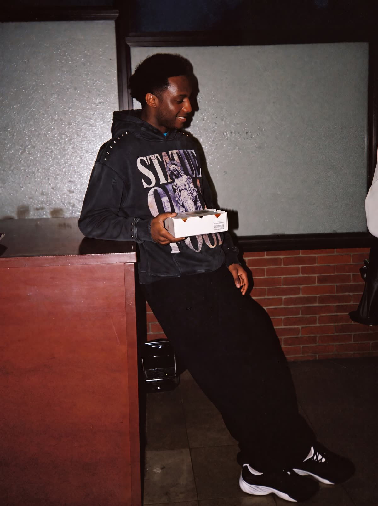
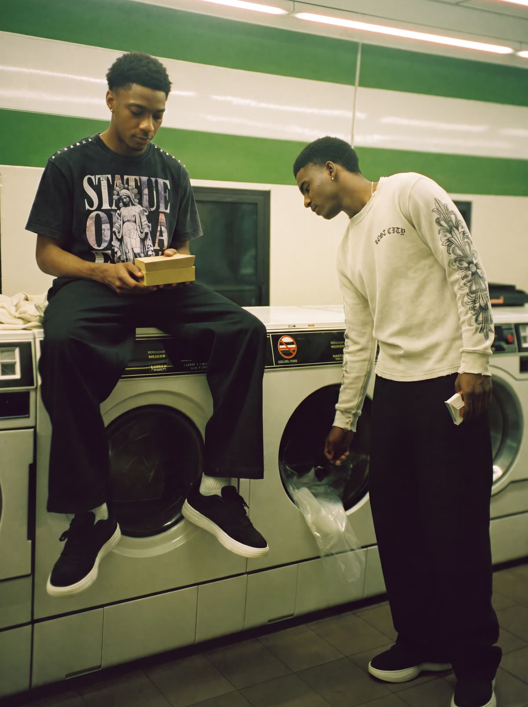
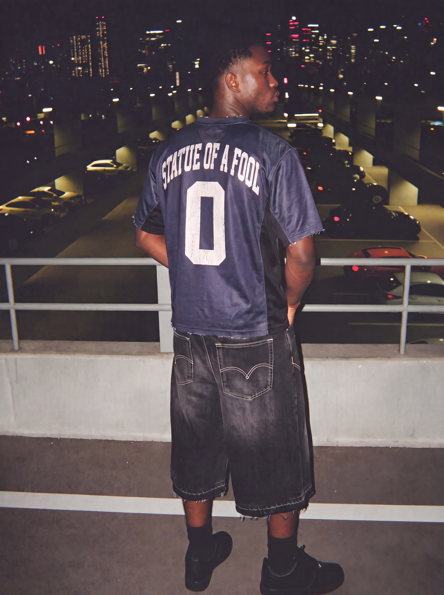
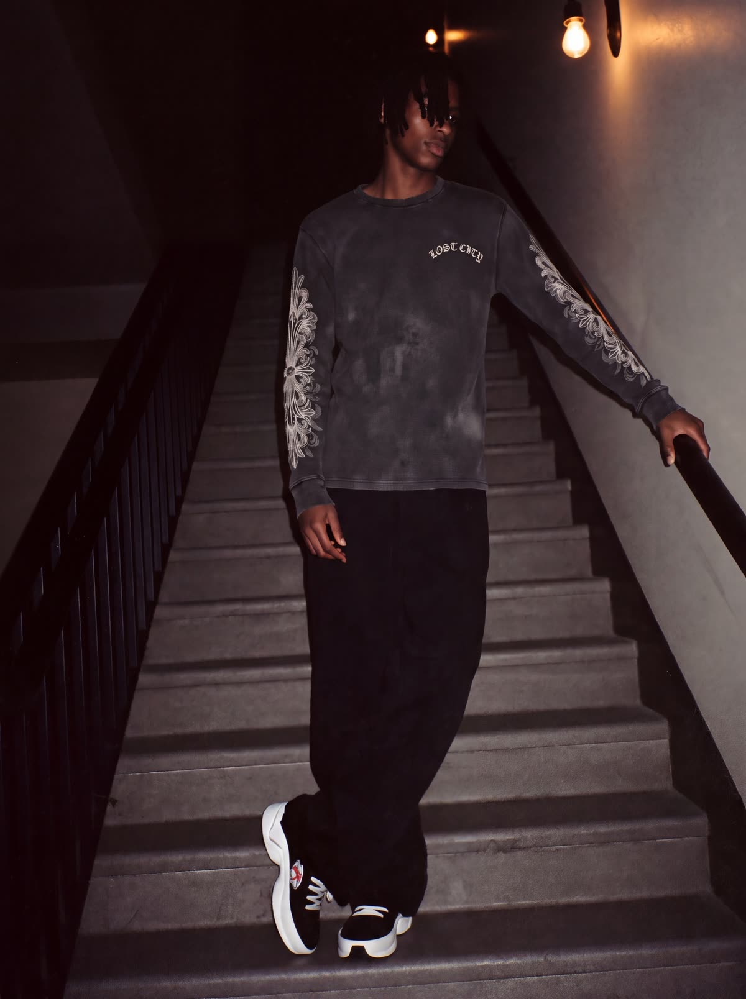
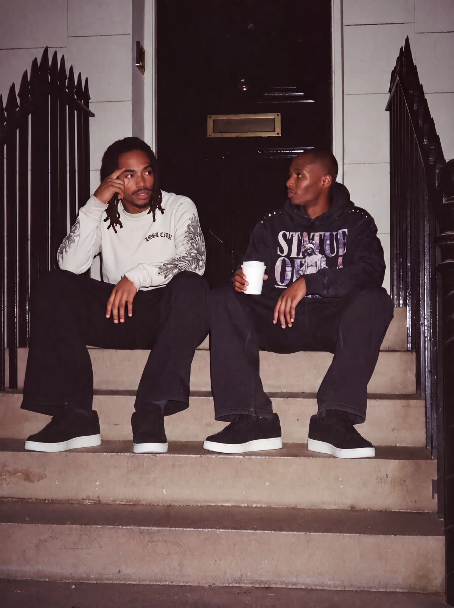
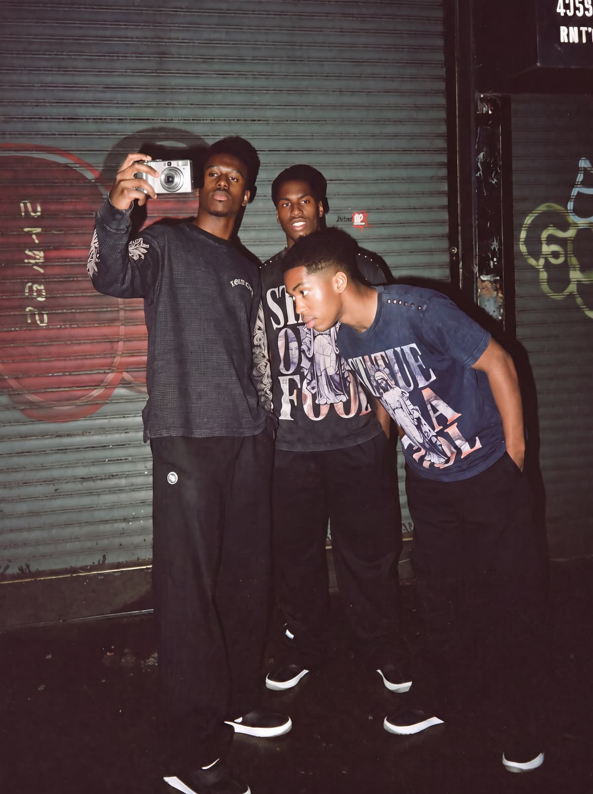
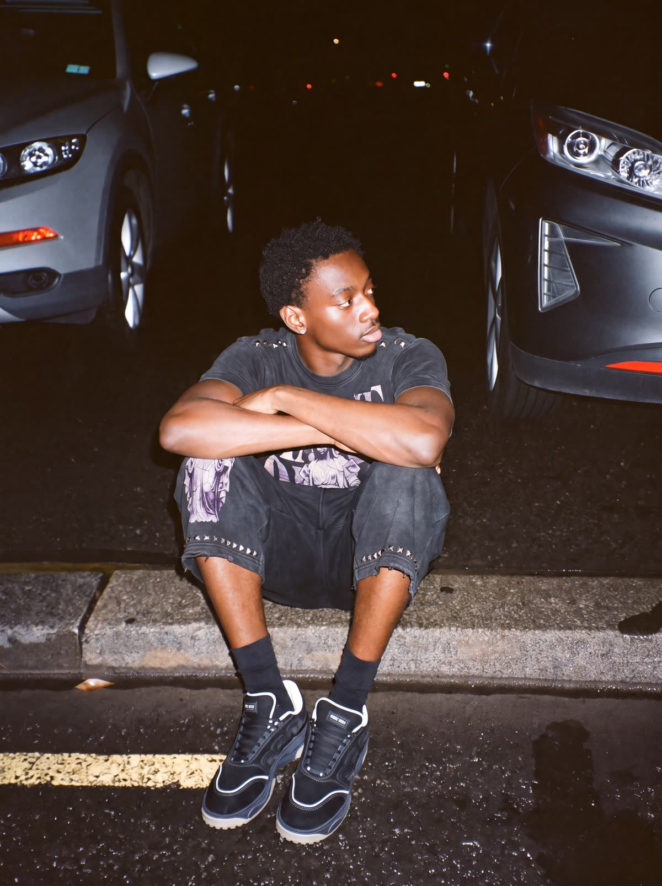
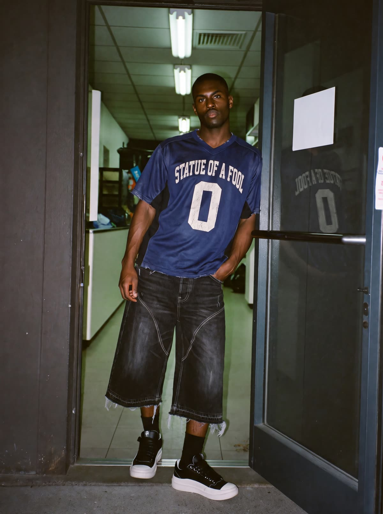
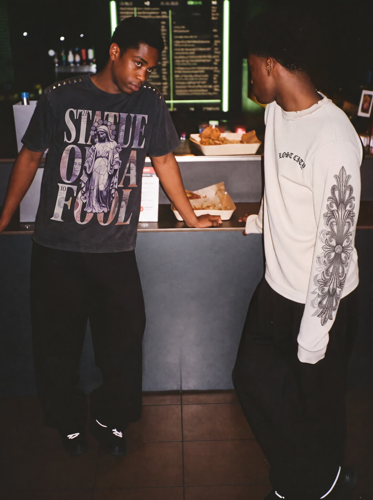
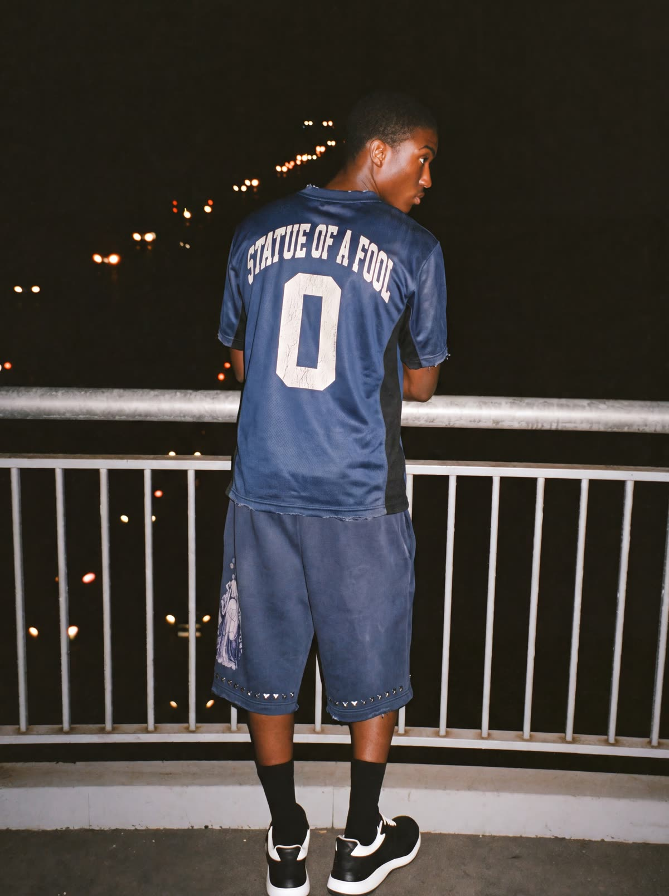
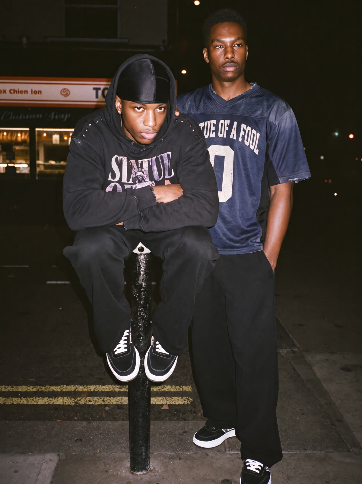

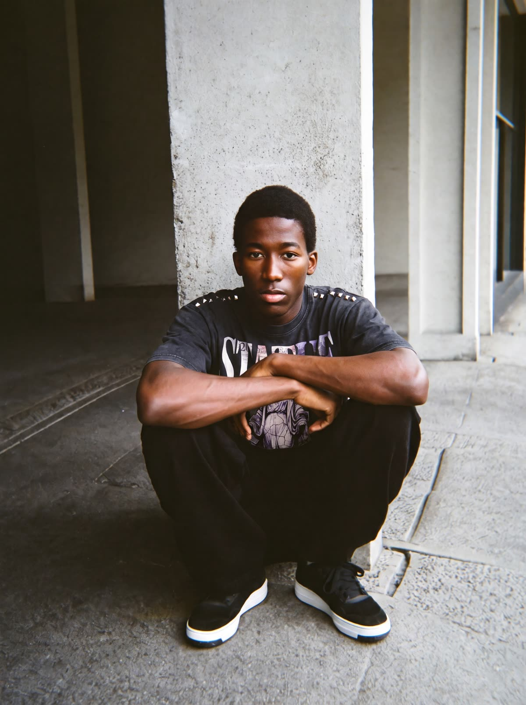
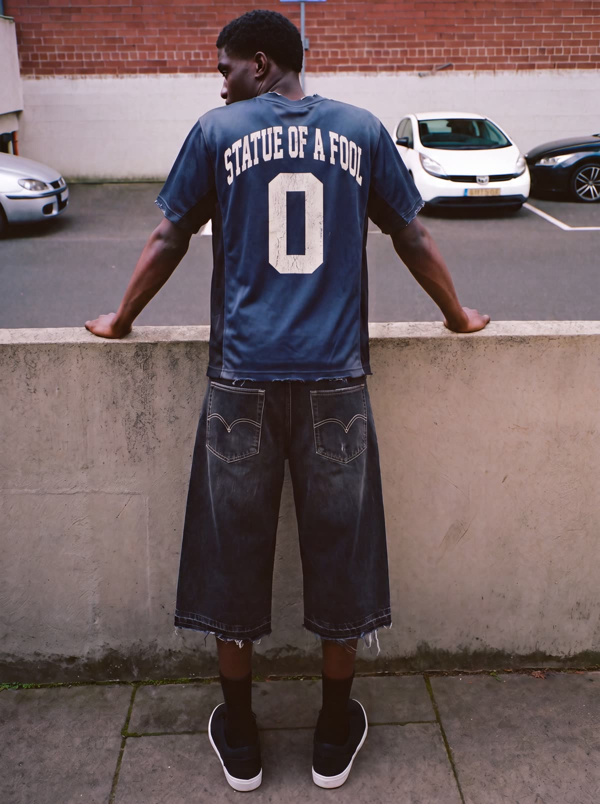